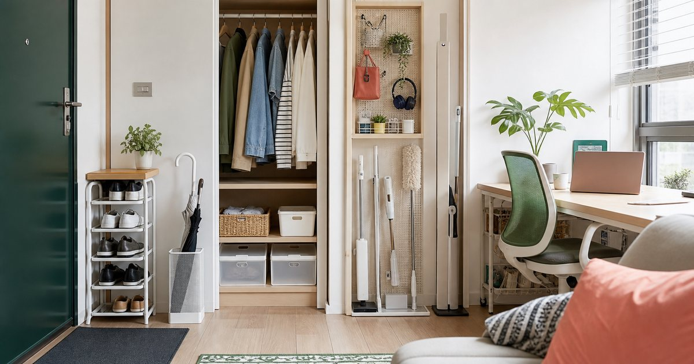

小宅收納不是買更多盒子：玄關、衣櫃、書桌與清潔工具的配置
小宅收納的核心不是把物品藏起來，而是讓玄關、衣櫃、書桌與清潔工具各有位置。先整理動線，再決定要不要買盒子。

先找出每天最常塞車的四個位置
小宅收納要先看塞車點，不要先看漂亮圖片。玄關堆包、衣櫃塞滿、書桌被線材和帳單佔據、清潔工具不知道放哪裡，這四個地方若沒處理，其他角落再漂亮也很難維持。
完美主義和壹品輕奢家居館適合處理層架、櫃體與置物需求；真蓁嚴選負責清潔工具；TZUMii 可放在需要 DIY 家具或書房收納的人選項裡。SUSS Living、Awayuki 淡雪與多彩家居則可作為桌面、生活雜貨或日用品補充。
編輯部會先看「東西為什麼會停在那裡」，而不是先問要買哪個盒子。若物品每天停在同一個位置，通常代表那裡需要一個正式落點，而不是需要你每天更自律。
- 玄關：處理鞋、包、鑰匙、雨具。
- 衣櫃：處理常穿與很少穿的分流。
- 書桌：處理線材、文件、文具與杯具。
- 清潔角落：處理拖把、掃把、補充品與耗材。
玄關要有暫放區，但不能變成倉庫
玄關需要暫放，但暫放不等於堆放。每天回家會出現的包、外套、雨傘、口罩、鑰匙與發票，應該有一個明確落點；如果沒有，它們就會一路散到餐桌和沙發。
壹品輕奢家居館的層架、置物架、雨傘架或穿衣鏡類型選項，可以用來處理玄關功能；完美主義則可處理更完整的櫃體與收納。選擇時先量寬度和開門方向，不要只看商品頁照片。
玄關收納最好留一點空位，讓臨時物品有短暫停留的地方。若每一格都被塞滿，新的包裹、雨具或外套就會立刻外溢，最後又回到混亂。
- 玄關收納深度不宜阻礙開門與走路。
- 雨傘和鞋類要考慮濕氣，不要和文件混放。
衣櫃先分使用頻率，再談風格一致
衣櫃亂，常常不是衣服太多，而是高頻和低頻混在一起。每天穿的衣服、偶爾穿的正式服、季節性外套、旅行用品與備用寢具如果全部塞在同一區，再多收納盒也會很快失效。
建議先把衣櫃分成伸手可及區、低頻區和待處理區。伸手可及區只放最近兩週會穿的衣物；低頻區收外套和季節衣物；待處理區放需要送洗、修改或捐出的東西。這時再看完美主義、TZUMii 或多彩家居的櫃體和層架，會更知道該買什麼尺寸。
風格一致可以放在第二步。第一步是讓你早上不用翻箱倒櫃，晚上不用把衣服丟在椅背上。當使用頻率分清楚，衣櫃才有機會變好看。
- 先減少每天翻找的範圍，再增加收納用品。
- 收納盒要貼近衣物類型，不要買到最後每盒都一樣滿。
書桌收納的重點是讓工作能快速開始
書桌不是展示櫃，它的任務是讓你能快速進入工作或閱讀。線材、充電器、筆、文件、耳機、水杯、香氛小物和收據，如果沒有分區，書桌很快會變成所有雜物的中繼站。
SUSS Living 的設計雜貨、收納文具與餐廚小物，適合用在桌面細節；Awayuki 淡雪可作為質感日用品補充；完美主義則適合處理桌邊層架或收納櫃。重點是讓桌面保留一個空白工作區，而不是把所有小物都展示出來。
如果你常在家開會，書桌背後也要整理。鏡頭看得到的區域不必豪華，但要乾淨；一個收納籃、一個文件架和一條固定線材路徑，往往比更多裝飾更有用。
- 桌面固定保留一塊空白區。
- 線材和充電器集中到同一側，避免每天重新找。
清潔工具要好拿，家才會更容易維持
清潔工具若放得太遠，就會變成週末大掃除才拿出來的東西。真蓁嚴選的平板拖把、掃把與掃除用品，適合放在日常維持的角度思考；掃地、擦地、擦桌面、補充耗材要分開放。
清潔用品不一定要藏到最裡面。對小宅來說，一個不礙眼、通風、好拿的位置，比完全看不見更重要。若每次清潔都要搬三樣東西，久了就不會做。
清潔工具也要考慮乾濕分離。濕拖把、抹布、補充瓶和未開封耗材不應全部塞在一起，否則整理本身會變成新的麻煩。
- 拖把和清潔劑不要和乾淨寢具、衣物混放。
- 清潔耗材要有補充區，避免用完才發現沒有。
買收納前先做七日回位測試
在購買收納用品之前，可以先做七日回位測試：每天睡前把玄關、衣櫃、書桌和清潔用品各回位一次。哪個位置最難回去，哪裡才是真正需要收納家具或工具的地方。
這個測試能避免買到不適合的盒子。小宅收納不是把物品藏起來，而是讓生活動線變短。當你知道物品為什麼會亂，收納用品才會成為工具，而不是新的雜物。
七日測試結束後再下單，你會更清楚需要的是層架、抽屜、掛勾、托盤，還是單純丟掉重複物品。這個順序雖然慢一點，但比較不會買錯。
- 連續七天都回不了位的東西，才是收納優先處理對象。
- 尺寸、開口方向、清潔便利性要比外觀更早確認。
FAQ
小宅收納應該先買層架還是收納盒？
先看物品類型和動線。若物品需要展示或高頻拿取，層架較適合；若是低頻備品或換季衣物，收納盒較適合。不要在未量尺寸前一次買齊。
租屋族可以做哪些不釘牆收納？
可先考慮落地層架、窄型置物架、桌邊櫃、門後掛勾與可移動收納車。購買前要確認承重、尺寸、門片開合和搬家時是否容易拆移。
清潔工具放在看得到的位置會不會不美觀？
關鍵是整齊與通風，而不是完全藏起來。若清潔工具不好拿，日常維持會變困難。可以用窄櫃、角落架或固定掛放區處理視覺整潔。
下一步建議
如果你要從今天開始整理小宅，先挑玄關、衣櫃、書桌或清潔角落其中一個位置做七日回位測試。
重要警語
本文為一般居家整理與收納選購情境整理，不構成裝修、施工或安全保證。家具、層架與清潔用品需依空間尺寸、承重、材質、租屋規範與商品頁標示評估；價格、活動與庫存請以商品頁公告為準。
本文含品牌／商品導購連結；若你透過部分商品連結前往選購，Elite Fashion 可能取得合作收益。本文仍以編輯判斷與使用情境整理為主，價格、規格、活動與庫存請以商品頁公告為準。